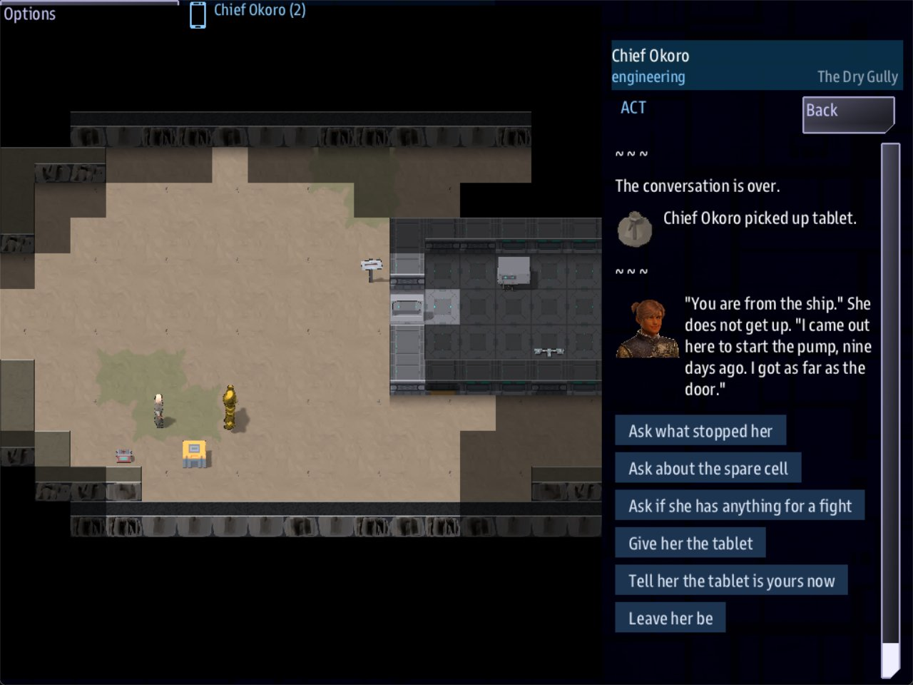

Class 3, Lecture 12 - Scenes on the ground¶
What you will have at the end¶
One story across three maps, with two endings.
Pim wants her tablet back from the thing in the cistern. That is a quest, and it starts and ends in her scene. Bring it to her and she gives you a fuse and goes home. The pump needs three fuses, and whoever fits them has to be carrying them. The yard terminal can stand the sentry down. And somebody with a crowbar and no patience can lose the whole game from inside the pump house.
Every one of those is an answer in a room, with a condition in front of it or an outcome after it. You know the shape. Today you learn the words that only make sense on a map.

Chief Okoro talks to Pim in the gully with her tablet in his pack: the Act app now offers Give her the tablet.Only mission.amd changes. You add one quest, one person and one prop, rewrite two
scenes, and add a line to two of the starter's.
The video¶
About 7 minutes. Subtitles are available in the player.
Before you start¶
MyAwayas Lecture 11 left it.sbs lint MyAwaysaysclean.- A command prompt open in
C:\Cosmos\data\missions.
Words for this lecture:
| Word | Meaning |
|---|---|
| Condition | The part of a choice after if: who is offered it |
| Outcome | The part after ;: what taking it does |
| Holding | In the pack of the crew member who is answering |
| Party | Everybody on the ground, taken together |
| Fact | A thing the party has learned, by name: ; learn spare |
The words, all of them¶
You have used some of these since Lecture 3. The ones marked NEW only work on a map.
Conditions. A choice has at most one.
| Condition | Offered to |
|---|---|
if medical |
Somebody with that job |
if skill science >= 3 |
Somebody that good |
if learned >= 2 |
Anybody, once the party knows that many facts |
if learned spare |
Anybody, once the party knows that one fact |
if holding tablet |
NEW. Whoever is carrying one. if holding fuse >= 3 asks for three |
if party pump_key |
NEW. Anybody, when somebody in the party is carrying one |
Outcomes. A choice may have several, with commas between them.
| Outcome | Does |
|---|---|
learn spare |
The party knows a fact |
signal cistern_drained |
Sends a signal |
check engineering 10 else pump_spark |
Rolls. A failed roll goes to that room instead |
accepts, completes, fails, and a quest's key |
Starts, finishes or fails that quest |
give fuse |
NEW. Puts one in the pack of whoever answered. give fuse 2 gives two |
take tablet |
NEW. Takes one out of their pack. If they have not got it, the answer does nothing |
open door |
NEW. Opens a door prop, by its key |
reveal stash |
NEW. Puts a hidden prop on the map, by its key |
calm sentry |
NEW. That person stops attacking |
rouse pim |
NEW. That person starts |
dismiss pim |
NEW. That person leaves the map |
summon pim_yard |
NEW. Puts a hidden person on the map, by their key |
Step 1 - A quest that waits¶
Find the Quests section. Under the last line of Hold at the Relay, leave a blank line and add:
// A quest that waits. `Starts when: revealed` means nothing starts it but an answer:
// `; accepts pim_tablet`, in Pim's scene.
### [Pim's Tablet](pim_tablet)
---
Scope: shared
Starts when: revealed
Objective: Bring Pim her survey tablet
Reward: 100 credits
Leads to: pim
---
Nine days of survey readings, in the jaws of the thing in the cistern.
Pim, Marrow's apprentice, dropped it on the cistern walkway and ran. Bring it back to her, and do not keep it.
You met Starts when: revealed in Lecture 6. The description is two paragraphs, because
the Quest Log shows all of it once Pim's answer starts the quest. The second says who is
asking, for whoever stayed on the ship and has never met her. Save, and run lint:
== mission.amd ==
[WARNING] line 98: `Pim's Tablet` waits to be revealed, and nothing reveals it: no `Then: reveal pim_tablet` on another step, and no answer or story line names `pim_tablet`. It never appears (never-revealed)
1 amd + 1 mast file(s): 0 error(s), 1 warning(s)
True, until Step 4.
Step 2 - Pim, by the tent¶
When Pim has her tablet she goes home. On a map, somebody who goes somewhere else is two records: the one who leaves, and the one who arrives.
In the People section, under Pim's last line, leave a blank line and add:
// Pim again, by the tent. She is not on the map until a scene sends for her:
// `; summon pim_yard`.
### [Pim](pim_yard)
---
Area: landing
At: 11, 4
Sprite: fig:junker_f
Face: female
Calm: yes
Talk scene: pim_yard
Hidden until: pim_went_home
---
Marrow's apprentice, home, with a mug in both hands.
Hidden until: works on a person as it does on a prop. She is not on the map until the
signal pim_went_home is sent, or until a scene names her key with summon. Nothing in
this mission sends that signal. The name is only there to keep her hidden.
Lint knows it. Run it now and it adds a second warning, ground-signal-unsent: she
stays hidden for good. That is true until Step 4 writes the answer that summons her.
You will see her on the yard's map, by the tent, once she has gone home. Her name on screen is Pim, the same as the first record. Her key is different. Keys are what the file joins with.
Her face is her own, too. Face: female picks a face at random, for each record and in
each game, so the Pim by the tent does not look like the Pim in the gully.
Step 3 - A stash¶
In the Props section, under the Depth gauge's last line, leave a blank line and add:
// Hidden until a scene shows it: `; reveal stash`.
### [Pim's stash](stash)
---
Area: gully
At: 4, 9
Sprite: prop:crate_medical
Item: medkit
Hidden until: stash_shown
---
A medical kit wedged under the rock, where the dust would not find it.
You will see it on the gully's map, by the rock, once Pim has told of it. A medkit is the one item the game knows what to do with. In the handheld's Pack app
it has a Use medkit button.
Lint says of the stash what it said of Pim, and for the same reason: no answer reveals it yet.
Step 4 - Pim's scene¶
Find the two rooms you wrote for Pim in Lecture 11, at the end of the file: Pim and What Stopped Her. Replace both with these eight.
### [Pim](pim)
% "You are from the ship." She does not get up. "I came out here to start the pump, nine days ago. I got as far as the door."
- [Ask what stopped her](pim_why)
- [Ask about the spare cell](pim_spare) if learned spare
- [Ask if she has anything for a fight](pim_stash) ; reveal stash
- [Give her the tablet](pim_thanks) if holding tablet ; take tablet, completes pim_tablet, give fuse
- [Tell her the tablet is yours now](pim_angry) if holding tablet ; rouse pim, fails pim_tablet
- [Leave her be]()
### [What Stopped Her](pim_why)
% "There is something on the walkway down there. It took my tablet out of my hand and I ran. I have been working up to going back for it ever since."
- [Promise to bring it back](pim) ; accepts pim_tablet
- [Ask her something else](pim)
- [Leave her be]()
### [Below](pim_spare)
% "The spare. Yes. It is in the tank room, past the sluice, and the sluice will not move until the tank is dry." She draws the stairs for you in the dust, and where they come out.
- [Ask her something else](pim)
- [Leave her be]()
### [Under the Rock](pim_stash)
% She tips her head at the rock behind her. "Medical kit. Marrow packs one for me every time, and I never open it."
- [Ask her something else](pim)
- [Leave her be]()
### [Nine Days of Readings](pim_thanks)
% She turns the tablet over twice before she believes it. Then she takes a fuse out of her lamp and puts it in your hand. "I will not need the light. I am going home."
- [Watch her go]() ; dismiss pim, summon pim_yard
### [Yours Now](pim_angry)
% She is on her feet before you have finished the sentence, and there is a cutting torch in her hand that was not there a moment ago.
- [Back away]()
### [Pim, at Home](pim_yard)
% "Marrow says I am to thank you properly." She holds up a small gray remote. "I wired the relay house door to this years ago, so I would never need his keycard."
- [Ask her to open the relay house](pim_remote) ; open door
- [Leave her to her tea]()
### [The Remote](pim_remote)
% She points it over her shoulder without looking. Across the yard the relay door drops its bolts.
- [Thank her]()
Save and run lint. It says clean: the quest from Step 1 now has an answer that names
it, and the two hidden records each have an answer that shows them.
You will see them in the handheld's Act app, talking to Pim in the gully. Take the new lines one at a time. Each was played for this page.
if learned spare. The fact comes from the notice by the pump house door, which says
; learn spare. A party that has not read the notice is not offered this choice.
; reveal stash. Before the answer the stash is not on the map. After it, it is, at
4, 9, and anybody can pick it up.
; accepts pim_tablet. The quest starts. It was revealed and waiting. Now it is in
the quest log.
if holding tablet ; take tablet, completes pim_tablet, give fuse. Offered only to
the one who is carrying the tablet. Three outcomes, in order, with commas: the tablet
leaves their pack, the quest completes and pays its 100 credits, and a fuse goes into
their pack.
; rouse pim, fails pim_tablet. The other thing you can do with her tablet. She was
Calm: yes. Now she is not, and she attacks like any hostile: in the test she had the
engineer down in five seconds. The quest is failed. It has no Lose: line, so the game
goes on.
; dismiss pim, summon pim_yard. She leaves the gully, and the second record from
Step 2 appears by the tent in the yard.
; open door. door is the key of the starter's relay door. It opens, from across
the yard, as if somebody had used a key.
Step 5 - The pump, with fuses¶
In Lecture 10 anyone could throw the lever. Now it takes three fuses. The toolbox holds two. Pim gives one, if she gets her tablet.
Find The Pump Panel and The Pump Runs, and replace both with these four rooms:
### [The Pump Panel](pump_panel)
%{party fuse < 3} Three fuse clips, all empty. The lever will not do anything until they are full.
%{party fuse >= 3} Three fuse clips, all empty, and three fuses between you.
- [Fit three fuses and throw the lever](pump_run) if holding fuse >= 3 ; take fuse 3
- [Fit two, and bridge the third clip with wire](pump_run) if holding fuse >= 2 ; take fuse 2, check engineering 10 else pump_spark
- [Jam a crowbar across all three clips](pump_burn)
- [Leave it alone]()
### [The Pump Runs](pump_run)
% The pump coughs, catches, and settles to a hammering you can feel through the floor. Somewhere under your feet, a great deal of water starts to move.
- [Step back]() ; signal cistern_drained
### [A Bright Blue Spark](pump_spark)
% The wire glows, sags and parts, and two good fuses go with it. Nothing else happens, and you have burned your thumb.
- [Step back]()
### [Fire in the Pump House](pump_burn)
% The crowbar welds itself to the clips. The panel burns first, then the cable under it, and that cable runs all the way back to the relay house.
- [Run]() ; fails relight
You will see these in the Act app at the pump panel. Four things to see.
holding is one person. party is everybody. if holding fuse >= 3 is offered to a
crew member with three fuses in their own pack. party fuse adds up every pack on the
ground.
take takes from the one who answers. So the condition in front of a take is
always holding, never party. Tried the wrong way, with if party fuse >= 3: the
engineer carried two fuses and the doctor one. He was offered the answer, pressed it,
and nothing happened. A take that cannot be paid stops the whole answer.
A line is read by everybody, so a line asks about the party. The two % lines at the
top are chosen with %{party fuse < 3} and %{party fuse >= 3}. A line written
%{holding fuse >= 3} is never shown, whoever is holding what. Tried, the room had no
line at all.
The signal moved. In Lecture 10 the lever's answer sent cistern_drained. Now two
answers lead to The Pump Runs, so the signal is on that room's one way out. Put an
outcome where every route to it passes.
How the fuses get into one pack is up to the crew. In the Pack app, a crew member standing next to another has a Give to button for each thing they carry.
Step 6 - The sentry stands down¶
The starter's terminal already teaches a fact, codes, and uses it to open the door.
Give it a second use.
Find The Yard Terminal. Under its Send the door code line, add one line:
- [Send the door code](terminal_sent) if learned codes ; signal relay_unlocked
- [Send the sentry its recognition update](terminal_update) if learned codes ; calm sentry
and add this room above Nine Days:
### [Recognition Update](terminal_update)
% The terminal sends nine days of crew lists in one burst. Out in the yard the sentry stops, turns its head toward you, and goes back to its square with its weapon down.
- [Step back]()
In the Act app at the terminal, the new answer is offered once somebody has copied down the code. calm sentry turns a hostile into a person who never attacks. It keeps its power cell,
so a party that calms it still has to find another one. That is what your cistern is
for.
Step 7 - What the party carries¶
Find Old Marrow. Under his Ask what he has put by line, add one line:
- [Ask what he has put by](marrow_cache) ; signal cache_known
- [Show him the brass key](marrow_pump) if party pump_key
and add this room above The Keycard:
### [The Brass Key](marrow_pump)
% "That is the pump house. Pim went out there the day the beacon failed, to start the pump, and I have not had the legs to go and look for her." He closes your fingers over the key.
- [Ask him something else](marrow)
- [Thank him]()
In the Act app at Marrow, it is offered to whoever talks to him while anybody on the ground carries the key. if party pump_key is the right word here. Nothing is taken, and it does not matter who
picked the key up. In the game the engineer carried it, and Lt Reyes, at Weapons, was
offered the choice.
Step 8 - The two endings¶
You have not written a Win: or a Lose: today. You did not need to. Both are on the
starter's quest, Relight Kesh Relay, and an ending is any answer that completes or
fails that quest.
The loss you wrote. - [Run]() ; fails relight, in Fire in the Pump House.
relight has a Lose: line, so the game ends with it, from a room two maps away from
the beacon.
The win you built. You wrote no winning answer. The starter's beacon already has
one: - [Fit the power cell](beacon_lit) if holding power_cell ; take power_cell. Your
spare cell is a power_cell too. So the whole of Lectures 9 to 12 is a second road to
an ending that was already there.
Two rules for an ending.
Give the last answer empty brackets. The game is over when it is pressed, and a room after it would never be read.
Put fails only where the story is truly over. fails pim_tablet is safe anywhere,
because that quest has no Lose:.
Step 9 - One more outcome¶
There is one more outcome: discover, and an area's key. It tells the ship an area is
there, as if somebody had walked into it. It goes with known: no from Lecture 9.
It is not in your mission, because here it would do very little. Your cistern has
beam: no as well, so the transporter still could not reach it. The word would only add
the stairs to the Look app's list of ways out.
It was tried for this page all the same, with ; discover cistern on Pim's answer about
the spare cell. Before the answer the party knew of the yard only, and after it of the
yard and the cistern. Lint said clean.
Step 10 - Check it¶
Each row was tried on the finished files, one change at a time.
| The mistake | What lint says |
|---|---|
if learned spar |
guard-learned-unknown: nothing says ; learn spar. It lists what is learned: codes, log, spare |
if spare, with no learned |
guard-names-a-fact: on its own that is read as a job |
; accepts pim_tablt |
outcome-quest-missing |
The quest left at Starts when: at once |
outcome-accepts-running |
| Three outcomes with no commas | outcome-run-together, and pack-item-shape: the game skips this whole answer. Pressed, nothing is taken, finished or given, and the scene moves on |
gives fuse |
unknown-outcome-verb |
; if party pump_key, the condition after the ; |
unknown-outcome-verb, about if |
if holding fuse >= 2 and engineering |
guard-joined and unreadable-guard. A choice has one condition |
if holding tablt |
item-nothing-gives: nothing in the mission gives anybody a tablt. It lists what is given. The choice is offered to nobody |
; dismiss pim, summon pim_yrd |
ground-verb-target: nobody has the key pim_yrd. Pim leaves the gully and never arrives. She is gone from the game |
; dismiss pimm, summon pim_yard |
ground-verb-target. She arrives by the tent and is still in the gully: two of her |
summon left off altogether |
ground-signal-unsent, on the second Pim: she stays hidden for good. Pim is gone from the game |
; calm sentri |
ground-verb-target. The sentry goes on attacking. It shot the crew member at the terminal |
; open dor |
ground-verb-target. The relay door stays shut |
; reveal stsh |
ground-verb-target, and ground-signal-unsent on the stash. It stays hidden |
What lint cannot see¶
Lint checks the key after a NEW word against your records, and an item against what the mission gives. It does not count what is in a pack. All of these lint clean.
| The mistake | What happens |
|---|---|
if tablet, with no holding |
The choice is offered to nobody. On its own the word is read as a job |
if holding fuse >= 2 ; take fuse 3 |
Offered with two fuses. Pressed, it does nothing at all |
if party fuse >= 3 ; take fuse 3 |
Offered when the party has three between them. Pressed by somebody carrying two, it does nothing |
%{holding fuse >= 3} on a line |
The line is never shown |
; fails arrive, a quest with no Lose: |
The game goes on |
The Lose: line deleted from Relight Kesh Relay |
The quest is failed and the game goes on, with no way left to win it |
; if party pump_key, the condition after the ; |
Lint does warn. In the game the choice is offered to everybody, key or no key |
So check the packs by hand. For every take in your file, read the condition in front
of it: it should say holding, and ask for at least as many.
Step 11 - Play it¶
The long way round, as it was played in the game for this page:
- Both beam down. Lt Reyes deals with the sentry: Fire, FULL, Arm, and a click on it. One FULL shot puts it down, and it drops its power cell. Leave the cell. Expect to miss: a shot goes to the cell you clicked, and the sentry may have walked on. Nothing tells you a shot hit or missed. Watch the map.
- Chief Okoro picks up the pump house key, a small blue key by the foot of the tent.
Act says
Chief Okoro picked up Pump house key.: the prop's heading, and the key is gone from the map. Pack sayspump key x1, the item's key. Lt Reyes shows Marrow the key. - Okoro walks to the gully, by the trail sign and the way out. Near the relay door, Look's first button is Use Relay door, not Go to. In the gully he takes the toolbox, reads the notice, and talks to Pim: the spare cell, the stash, and a promise to fetch her tablet.
- Reyes beams up: Crew, Beam up. The Weapons console's Quest Log now has Pim's Tablet.
- The door opens to the key. At the panel, Okoro has two fuses. He is offered the wire and the crowbar, and takes neither.
- Okoro goes down the stairs and, from the foot, puts the crawler down: Fire, FULL, Arm, a click. Expect to miss here too. He picks up the tablet.
- Back to Pim. Give her the tablet: a fuse, and 100 credits. She goes home.
- The panel again. Now Fit three fuses and throw the lever is there.
- Down the stairs. The sluice is open. Okoro takes the spare cell.
- Back to the yard. Pim is by the tent, and opens the relay house.
- The beacon, Fit the power cell, Call it in.
Then play it once more and lose it, with the crowbar.
If something goes wrong¶
| What you see | Why | What to do |
|---|---|---|
A choice with if holding is not offered |
Somebody else is carrying it | Use Give to in the Pack app, or have that person answer |
A choice for a job is offered to somebody else, marked (covering for medical), while the medic is on the ground |
Covering is worked out for each scene, from who is standing in it. The medic was across the yard | Nothing to fix. If only a medic should do it, write if skill medical >= 3: nobody covers for a skill |
| Pim does not turn up by the tent | The key after summon does not match the second record's key |
Run lint: ground-verb-target |
| The pump runs and the sluice stays shut | The signal's name differs between the room and the prop | Run lint: ground-signal-unsent |
Exercise¶
- Give Marrow a use for the medical kit: an answer offered
if holding medkit, that takes it and finishes The Caretaker's Cough for a party with no medic. Which signal does that story wait for? - Add a third way to get a third fuse. Decide where, and who can do it.
- Write a second losing answer somewhere it would be fair, and a line in that room that warns the crew first.
- Break it and read lint:
if holding;; take tablet completes pim_tablet; a%line that asks%{learned spar}.
Then answer on paper, from the file alone:
- List every way a party can get a power cell to the beacon.
- A party of one, the helm officer. Which of your props and choices can she not use?
- Which answers in your mission end the game?
Checkpoint¶
You are done when all five are true:
sbs lint MyAwaysaysclean.- Pim's Tablet starts from an answer and completes from an answer.
- The pump runs only for somebody carrying three fuses, or two and some luck.
- You have won by the long way round, and lost with the crowbar.
- You can say what
holding,partyandlearnedask, and whatgive,take,open,reveal,calm,rouse,dismissandsummondo.
Next¶
Lecture 13 looks at the screen your crew has been using all this time: the handheld, its apps, and what the map shows.
Further reading¶
Nothing here is needed for Lecture 13.
- "Boarding parties" in the library documentation: "How a visit ends, and two endings", and "A visit on a tile map".
- Dawnline's
scenes.amd. Its first page is its author's notes on what each word does.
Download this lecture's finished files (a zip of its example folder).